Hero Video
Level Goals & Overview
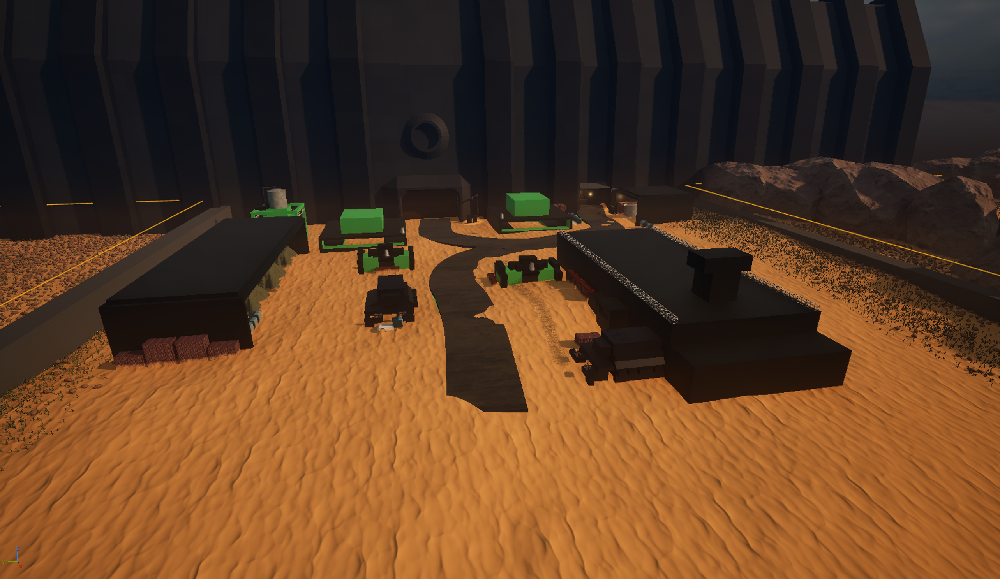
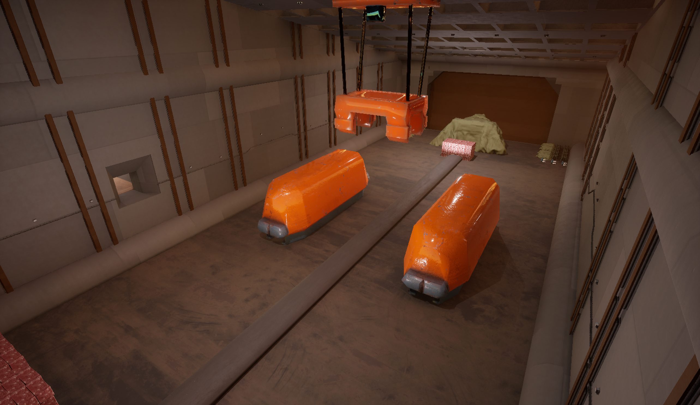
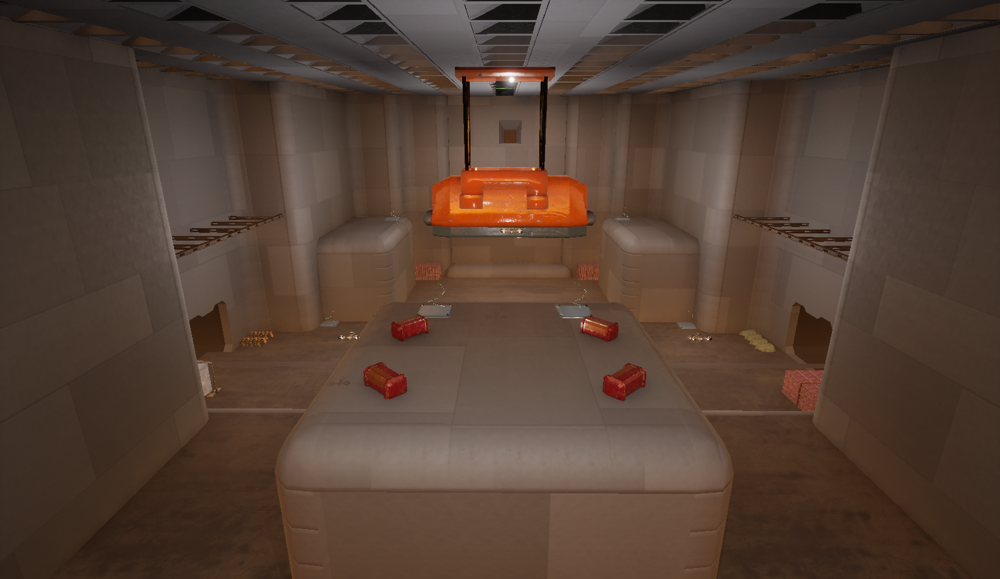
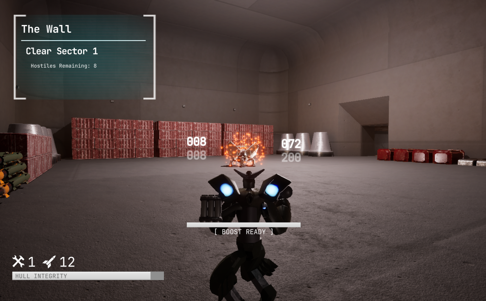
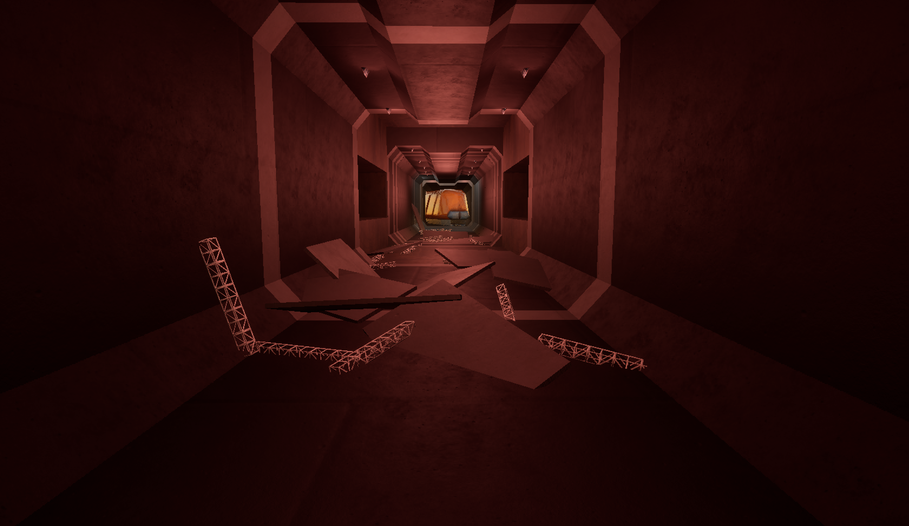
Desert POI 1 Iteration
Overview
S.O.R.N is a fast-paced, third-person mech shooter set across a monolith-scale continent. "Directive 1" was designed to support strategic combat encounters in a semi-open desert and a monolith-sized facility, while giving players freedom to move and engage dynamically.
- Teach and reinforce core player mechanics through level layout and encounters
- Guide players naturally through interesting and contextualized playspaces
- Design enemy encounters that feel challenging and rewarding
Level Walkthrough
- Goal: Teach players navigation, pacing, and strategic movement in a large open desert while guiding them toward the main objective
- Design action 1: Placed three POIs with the first unmissable, using guarding turrets to naturally draw players into the encounter and reinforce core controls
- Design action 2: Added a giant laser turret and arranged debris fields as mandatory cover to challenge line-of-sight management and promote spatial awareness
Beat 1: The Desert
- Goal: Transition players from open desert navigation to tight, controlled combat encounters
- Design action 1: Introduced the Hermit enemy in a small storage room, allowing a safe first engagement before more complex fights
- Design action 2: Layered enemy placements and set dressing in Sector 1 to encourage tactical movement, provide meaningful cover, and foreshadow future train-based encounters
Beat 2: The Wall — Sector 1
- Goal: Introduce verticality and environmental hazards to increase challenge and teach advanced traversal
- Design action 1: Placed bounce pads in a safe area first, then integrated them as a core traversal tool for combat and platforming
- Design action 2: Combined moving train hazards, multi-level enemy placements, and vertical spaces to create a more demanding, multi-layered encounter
Beat 3: The Wall — Sector 2
- Goal: Shift pacing and tension with a tighter, more linear section
- Design action 1: Use darker lighting, debris, and broken scaffolding to create danger while maintaining traversal paths and cover
- Design action 2: Place enemies densely in constricted corridors to encourage precise movement and combat mastery
Beat 4: The Wall — Sector 3
The Process


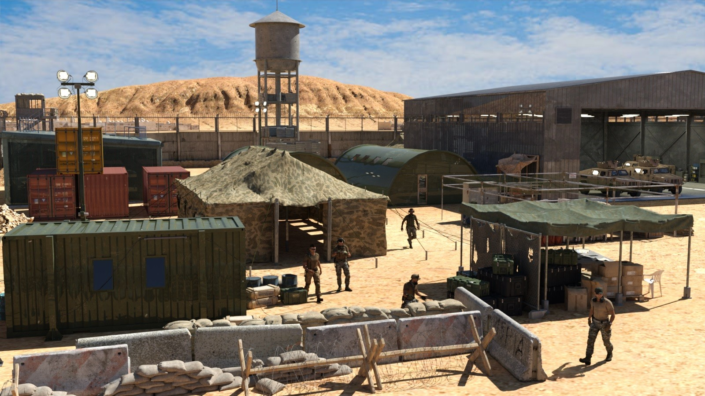
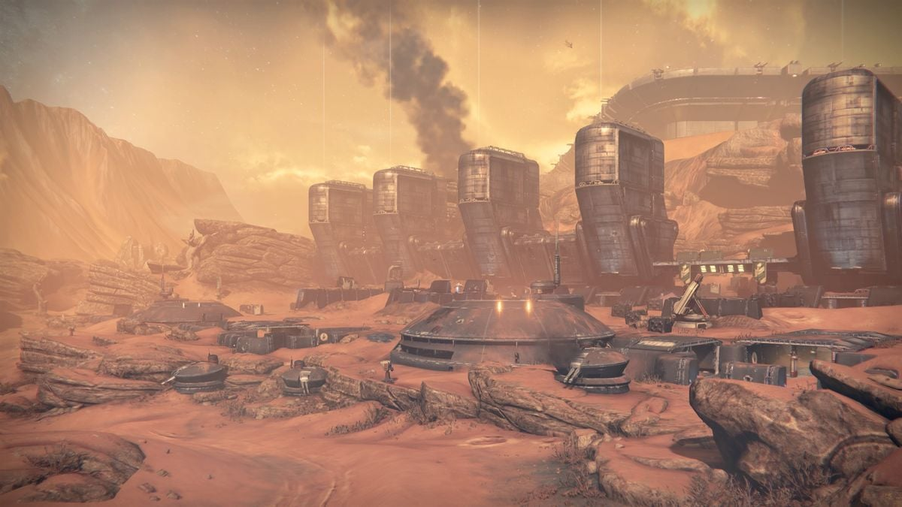
Armored Core VI reference
Research & References
The process involved creating an environment that supported fast-paced mech combat while teaching players core systems.
- Research & Ideation: Studied mech-focused games (e.g., Armored Core) to analyze combat pacing, encounter design, and level flow
- Reference Gathering: Collected visual references, concept art, and gameplay screenshots to inspire environmental design and thematic consistency
- Miro Board Organization: Compiled references and ideas on a Miro board to map layouts, level goals, and design solutions visually
Maps, Layouts & Documentation
This section highlights the level planning process through maps, layouts, and detailed design documentation.
- Level Design Documentation: Detailed each encounter and level design decision to communicate design intent clearly
- Comprehensive Maps: Developed top-down and blockout layouts highlighting key areas, paths, and strategic points
- Multiple Iterations: Refined and improved existing maps over time, showing design evolution through visual examples


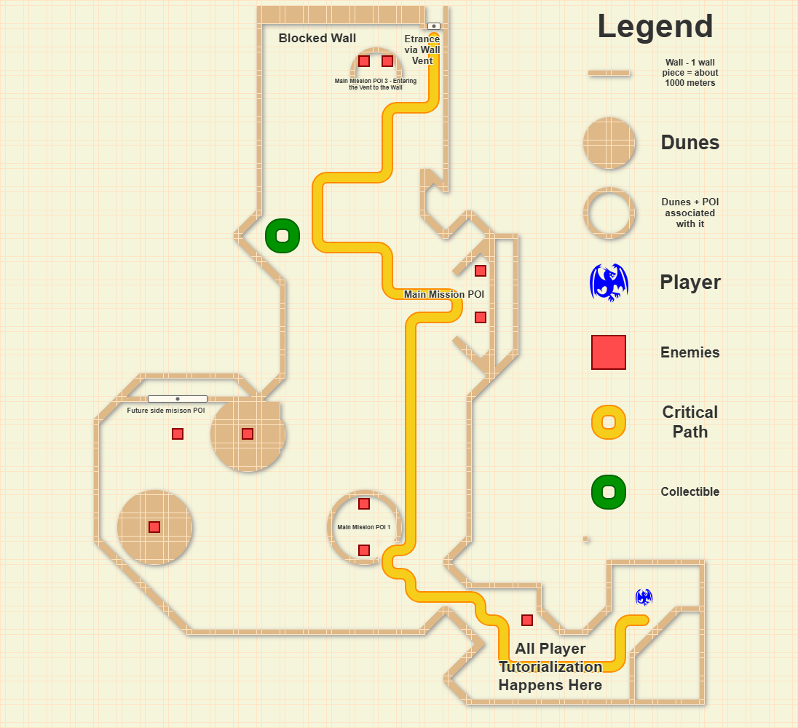
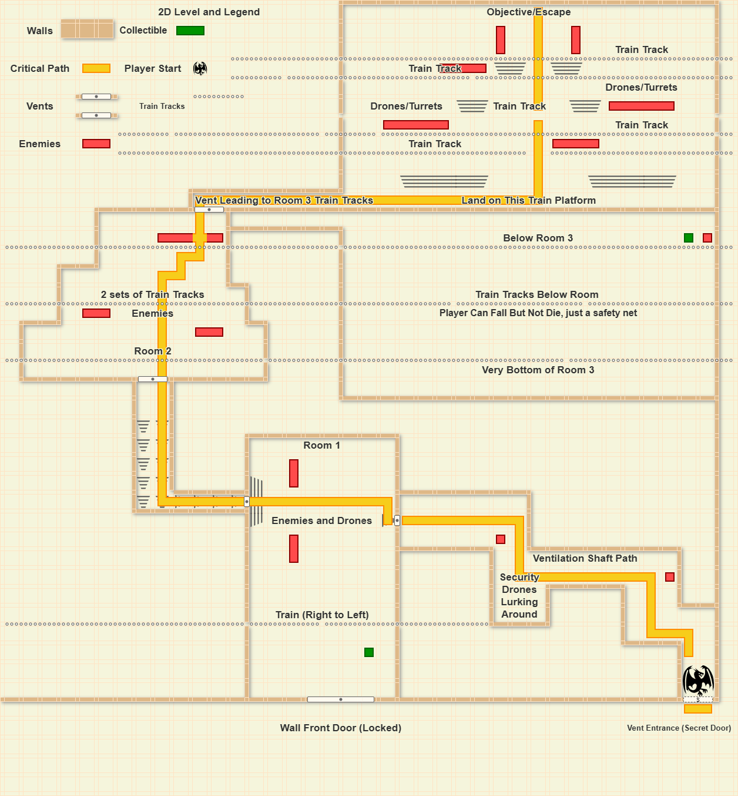

Level 1 Design Document
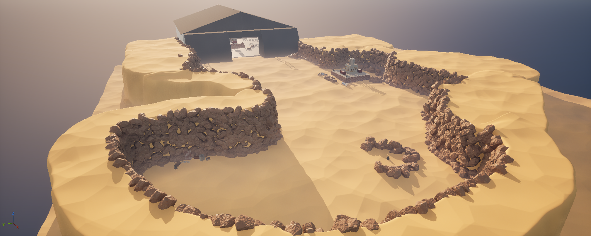

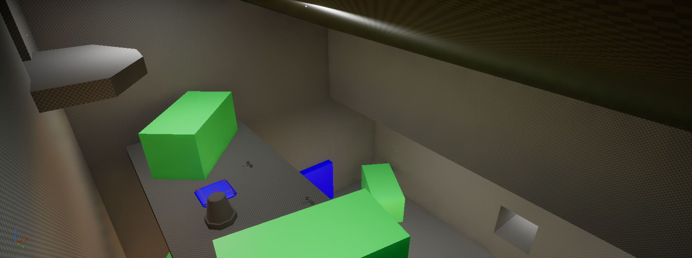
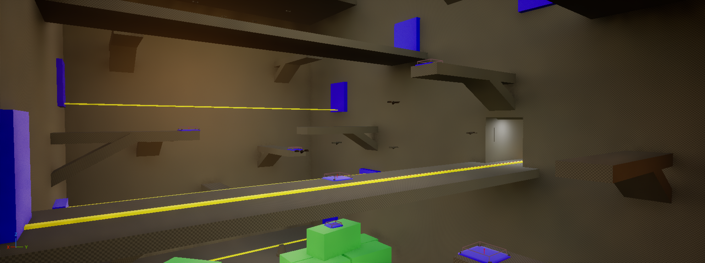
Proof of concept — Level 1
Initial Blockout
The initial blockout was designed to support the core mechanics of S.O.R.N, giving players spaces to engage with combat, traversal, and exploration.
- Supported Player Mechanics: Created blockouts and encounter areas that allowed players to engage with core mech abilities and understand combat pacing
- Visual and Tactical Clarity: Arranged key environmental features to communicate paths, cover, and combat flow clearly
- Contextualized Playspaces: Designed level areas that reflected maps, concept art, and research references
Design Challenges
Problem 1: Unclear Desert Exploration
- Goal: Create a desert landscape that is vast and intriguing, but still guides the player toward the main objective
- Problem: After the tutorial, players faced three unexplained paths with unclear purposes for each POI
- Solution: Increased landscape size, spread out POIs further but kept them visible, and adjusted player start to naturally guide toward the main path
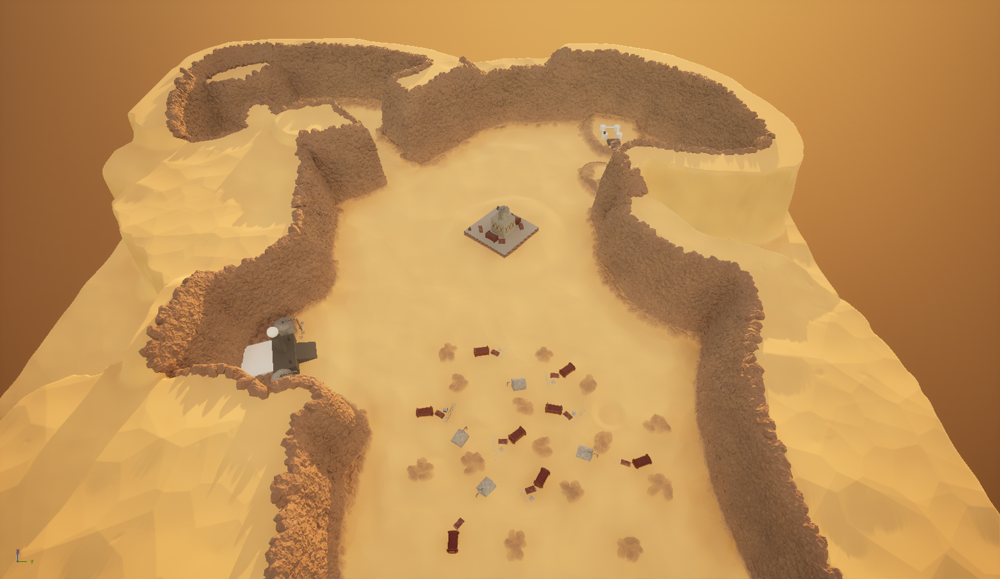

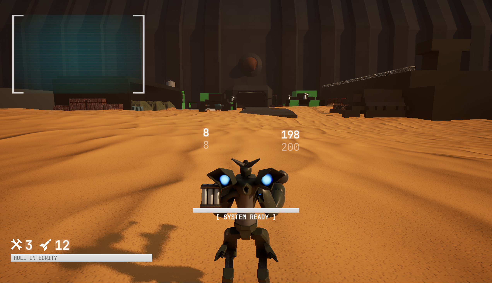

Players felt overwhelmed with no clear critical path
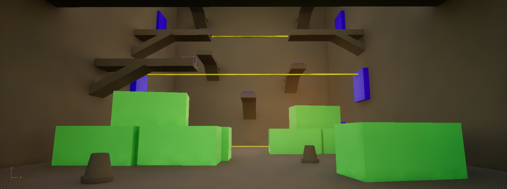
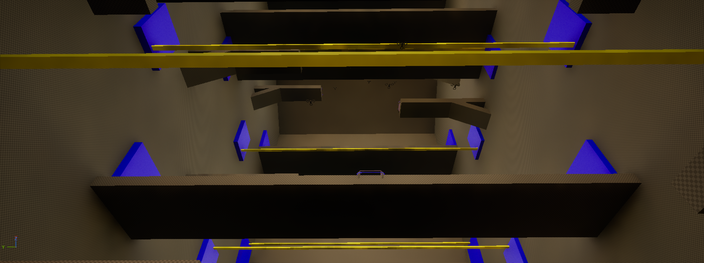
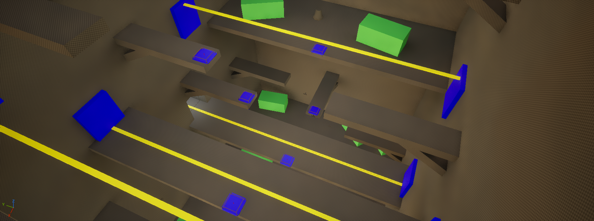
Platforming balance issues
Problem 2: Platforming Disrupted Flow
- Goal: Combine platforming and combat, blending traversal with fast-paced gameplay
- Problem: Platforming while in combat disrupted player flow and made scaling monolith-sized levels with jump pads extremely difficult
- Solution: Removed platforming to support design goals and pacing, pivoting to a more linear experience
Problem 3: Poorly Contextualized Playspaces
- Goal: Show the player traversing a desert to infiltrate a monolith-scale facility used for bullet train cargo transport
- Problem: POIs and sectors lacked identity, leaving their purpose and functionality unclear
- Solution: Redesigned POIs and facility sectors with clear intent, guided by updated reference images and a Miro board


Desert POI 1 — no context in early blockout
Conclusion & Learnings
Developing S.O.R.N's first level provided a hands-on opportunity to create large-scale 3D environments that balance exploration, combat, and player guidance. Iteration and refinement were key to ensuring pacing, flow, and engagement remained compelling throughout each encounter.
Knowledge Gained
- Gained experience blocking out levels and using Unreal Engine tools like CubeGrid, landscaping, and foliage
- Designing with purpose — every prop, encounter, and space reinforces gameplay or narrative
- Communicating level design concepts clearly through maps, diagrams, and reference visuals
Areas for Growth
- Exploring more creative layouts and prop placement to enhance player experience
- Applying feedback effectively while maintaining a cohesive level design
- Balancing challenge and guidance to better teach player systems through level design